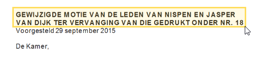
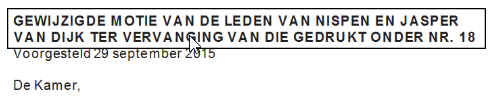
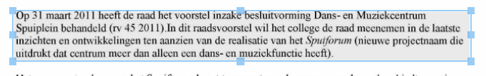
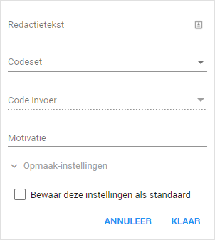
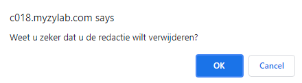
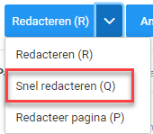

U kunt de documenten direct in ZyLAB aflakken op basis van de absolute en relatieve weigeringsgronden van de Woo en andere wetgeving.
Om af te lakken klikt u rechts, in het bewerkingsdashboard op Redacties & Annotaties.
Vervolgens kunt u de knop Redacteren (R) gebruiken om informatie af te lakken. Dit doet u door de knop aan te klikken en vervolgens de gewenste informatie die u wilt aflakken te selecteren. U kunt ook op de R toets op uw toetsenbord drukken om deze functie te activeren.

Vervolgens zal er een zwarte balk over de afgelakte tekst komen.
Wanneer u met uw muis over de balk gaat wordt de tekst weer leesbaar.

Om een grond toe te voegen aan een aflakking selecteert u de aflakking, dit doet u door eenmaal op de aflakking te klikken. U ziet dat de aflakking geselecteerd is doordat deze doorzichtig wordt en er 6 blauwe vierkanten om het vlak verschijnen. U kunt deze vierkanten gebruiken om de grootte van de aflakking aan te passen. Ook is het mogelijk om de aflakking te verschuiven.

Wanneer u een aflakking heeft geselecteerd kunt u dubbel klikken op het vlak om een menu te openen. In dit menu kan een grond toegevoegd worden aan de aflakking. In de uitleg hieronder, ziet u de mogelijkheden van dit menu.

Redactietekst
Als u hier tekst invoert wordt dit ook getoond op de aflakking zelf. Dit kunt u gebruiken als de volgende opties geen uitkomt brengen.
Codeset
Hier kunt u de wetgeving selecteren die u wilt toe passen, aangezien er alleen afgelakt wordt op grond van de Woo is enkel deze wetgeving beschikbaar.
Code invoer
Hier selecteert u het betreffende lid dat van toepassing is, dit lid zal, in een verkorte vorm, getoond worden op de aflakking.
Motivatie
Indien u een motivatie aan de aflakking wilt toevoegen kunt u dat hier invullen.
Opmaak-instellingen
Hier kunt u de kleur en doorzichtigheid van de aflakking aanpassen. Dit is in beginsel niet leidend voor hoe de documenten er bij de oplevering uit komen te zien, echter kan hier wel voor gekozen worden. Meer informatie hierover vindt u in het topic Documenten produceren met permanente aflakkingen en inventarislijst.
Checkbox 'Bewaar deze instellingen als standaard'
Hier kunt u uw geselecteerde instelling bewaren. Dit betekent dat wanneer u dit aanvinkt dezelfde instellingen die u momenteel heeft toegepast voor deze aflakking ook worden toegepast op aflakkingen die u in het vervolg gaat zetten. ZyLAB raadt u aan om hier gebruik van te maken om het aflakken te vergemakkelijken.
U kunt een aflakking verwijderen door deze te selecteren door eenmaal op de aflakking te klikken. Eenmaal geselecteerd drukt u op de Delete knop op uw toetsenbord (voor Apple gebruikers function + backspace). U krijgt nu een prompt in uw scherm die vraagt of u zeker weet dat u de aflakking wilt verwijderen. Klik hier op OK om de aflakking te verwijderen, u kunt dit niet terug draaien. In plaats van OK aan te klikken kunt u ook op de Enter toets drukken op uw toetsenbord.

In het dropdown menu naast de knop Redacteren (R) heeft u ook de optie Snel redacteren (Q).

Snel redacteren is een optie die het mogelijk maakt om aan één stuk door aflakkingen te plaatsen, zonder steeds weer op Redacteren (R) te hoeven drukken. Dit kan het aflakken aanzienlijk versnellen. U kunt de functie ook activeren door op de Q toets te drukken op uw toetsenbord. U dient bij het gebruik van deze functie met enkele punten rekening te houden.